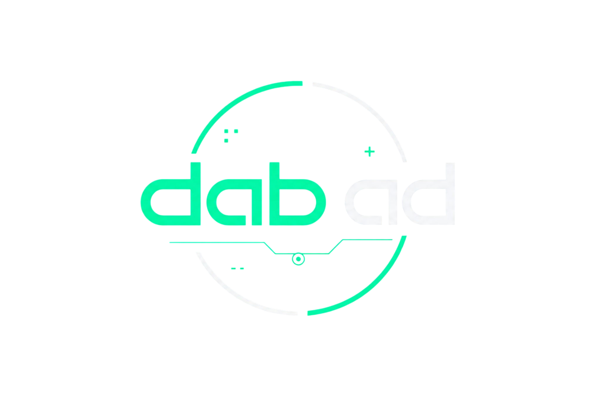
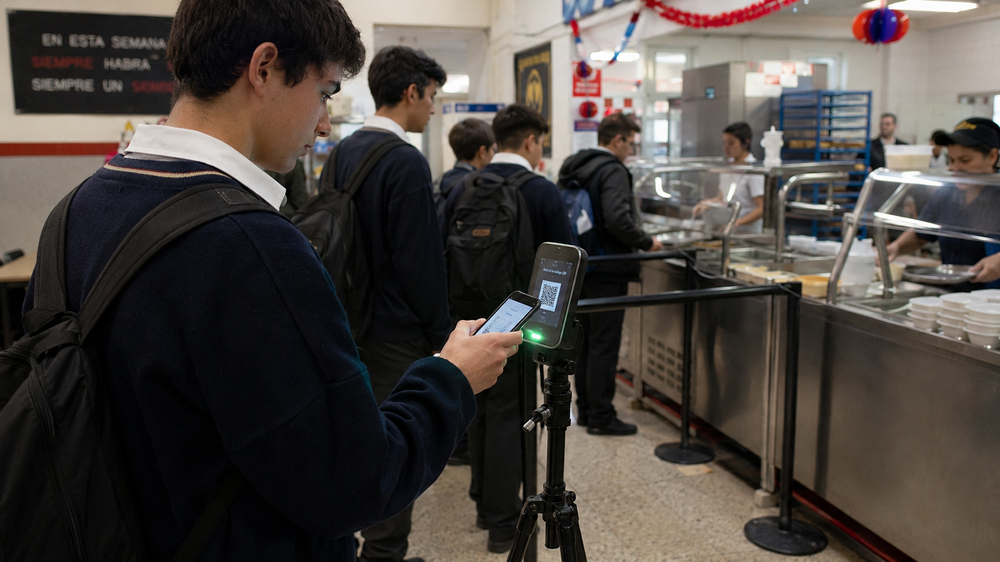
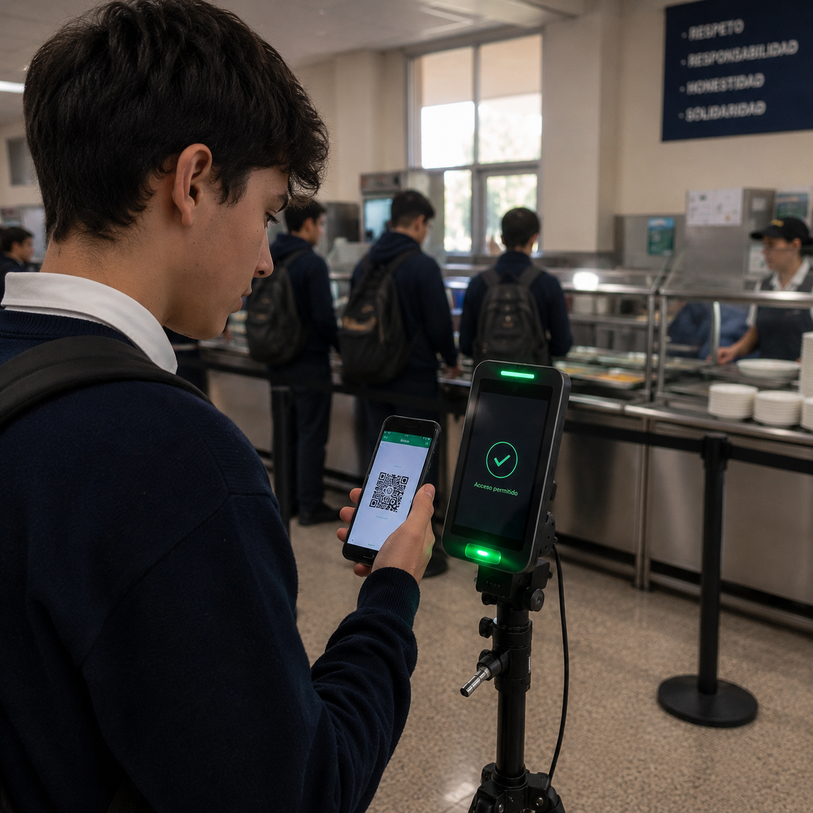
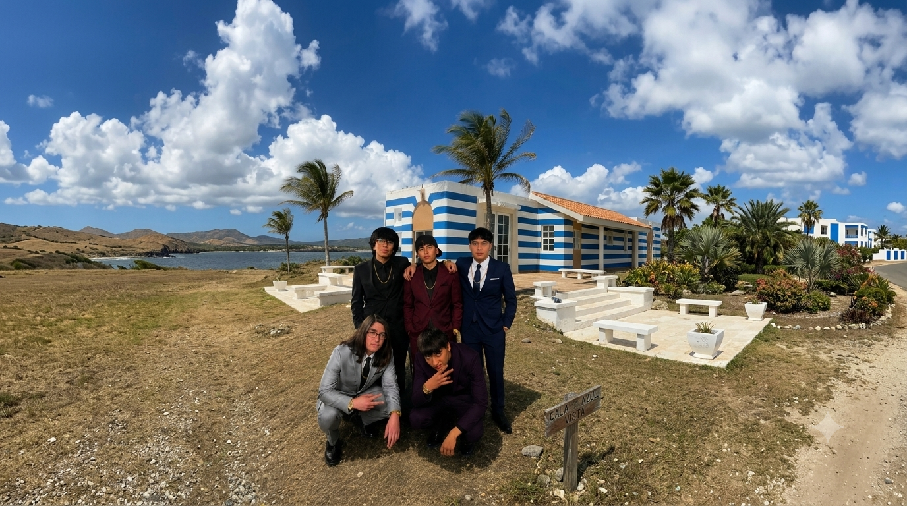

JunaWebTodo sobre la Tecnología y el Impacto de JunaWeb
Conoce a fondo cómo solucionamos la suplantación, reducimos las filas y combatimos el desperdicio de alimentos en los comedores escolares.
1. Resumen Ejecutivo
El presente proyecto propone el desarrollo e implementación de una plataforma web con integración de hardware destinada a la optimización logística del Programa de Alimentación Escolar (PAE - JUNAEB). El sistema soluciona las filas lentas y la suplantación en los comedores mediante reservas digitales y un innovador punto de control automatizado: un escáner montado en un trípode para controlar el flujo de los estudiantes de forma autónoma.

2. El Desafío del Desperdicio
Toneladas de comida descartadas anualmente a nivel mundial (19% del total disponible).
Promedio de desperdicio de comida anual por persona en el mundo.
De las emisiones de gases de efecto invernadero provienen de alimentos no consumidos.
Perspectiva desde la Cocina Escolar
Testimonio en primera persona donde una cocinera explica la cruda realidad del desperdicio de alimentos dentro de los comedores escolares. A través de su experiencia diaria, relata el impacto emocional y operativo de ver raciones completas descartadas, evidenciando la urgente necesidad de implementar un sistema de control eficiente que optimice la preparación de raciones según la asistencia real.
3. Alineación con los ODS
Consumo Responsable
La verificación objetiva de fecha, hora y nombre asegura un acceso 100% equitativo. Garantiza que la ración llegue al estudiante que realmente reservó, evitando colados o suplantaciones.
Hambre Cero
Al agilizar el flujo de entrada con el trípode, garantizamos que todos los alumnos alcancen a comer durante el tiempo del recreo, evitando botar raciones porque suena el timbre de clases.
4. Modelo Tradicional vs JunaWeb
| Característica | Sistema Tradicional | Con JunaWeb |
|---|---|---|
| Velocidad de Entrada | Filas lentas, espera de 15 a 20 min | Validación fluida en 2 segundos |
| Control de Seguridad | Revisión visual manual susceptible a errores | QR dinámico e imborrable con timestamp |
| Gestión de Raciones | Estimaciones a ciegas y gran desperdicio | Cálculo exacto basado en reservas reales |
| Labor del Personal | Inspector atado a sostener planilla o escanear | Trípode 100% autónomo, personal libre |
5. Cómo Funciona
Reserva Digital
El estudiante ingresa a la plataforma web desde su teléfono y confirma su asistencia al almuerzo con un clic.
Escaneo en Trípode
Al llegar al comedor, presenta su código QR dinámico frente a la estación de escaneo autónoma en la entrada.
Acceso y Almuerzo
El sistema valida el acceso al instante en pantalla verde y el alumno retira su bandeja de forma rápida sin filas.
6. Arquitectura del Sistema
Plataforma Web & Software
Desarrollo integral basado en arquitecturas modernas de software. Incluye el módulo de reserva en tiempo real para alumnos, panel de control administrativo y gestión inteligente de cupos.

Hardware & Trípode Autónomo
Integración física de escáneres ópticos montados en estructura de trípode. Valida al instante los códigos QR dinámicos de los alumnos, sincronizándose vía API con la base de datos central.
Prueba de Resiliencia: Contingencia "Modo Offline"
Estado de Red: ONLINE (100% Conectado)
El escáner valida datos en tiempo real directo con los servidores centralizados del PAE / JUNAEB.
7. Nuestro Equipo en Terreno
Colaboradores y Desarrollo
El desarrollo de JunaWeb es impulsado por un equipo multidisciplinario enfocado en la innovación tecnológica y el impacto social. Diseñamos, testeamos e implementamos soluciones integrales de software y hardware directamente en terreno.

Fotografía oficial del equipo
Agustín Sánchez
Diseñador de página web
Dante Canales
Desarrollador de la estructura HTML
Ariel Faúndez
Diseñador de JS y CSS
Diego Valenzuela
Diseñador de JS y CSS
Benjamín Carrasco
Ingeniero en Ciberseguridad
8. Preguntas Frecuentes
El sistema permite métodos alternativos de validación. Los estudiantes pueden usar una tarjeta física con código QR estático o los inspectores pueden realizar la validación manual buscando el RUT del alumno en el sistema.
Los códigos QR generados son dinámicos y cambian constantemente. Además, al escanearse en la estación del trípode, el sistema verifica la hora exacta y marca el ticket como 'Consumido' en tiempo real, bloqueando lecturas duplicadas.
Solo se necesita conexión a internet básica (Wi-Fi o datos móviles) y un smartphone montado sobre un trípode estándar en el acceso del comedor. No se requiere costoso hardware industrial.
Al requerir confirmaciones o reservas previas de las raciones, la cocina conoce con anticipación el número exacto de platos a preparar, reduciendo la sobreproducción y el desperdicio de insumos.